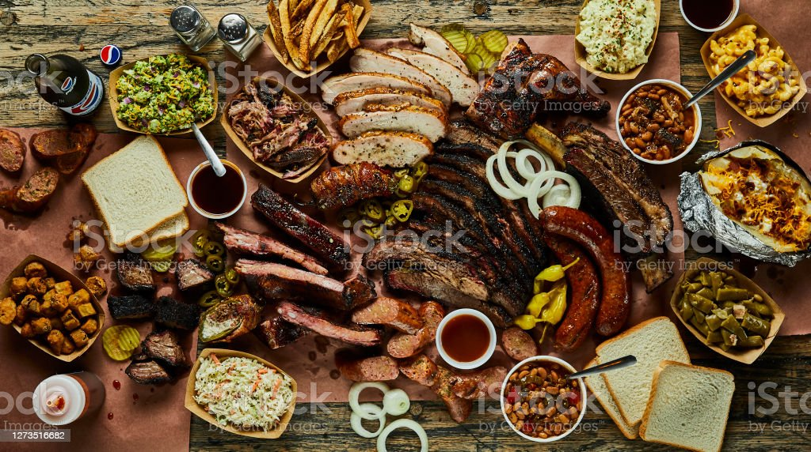
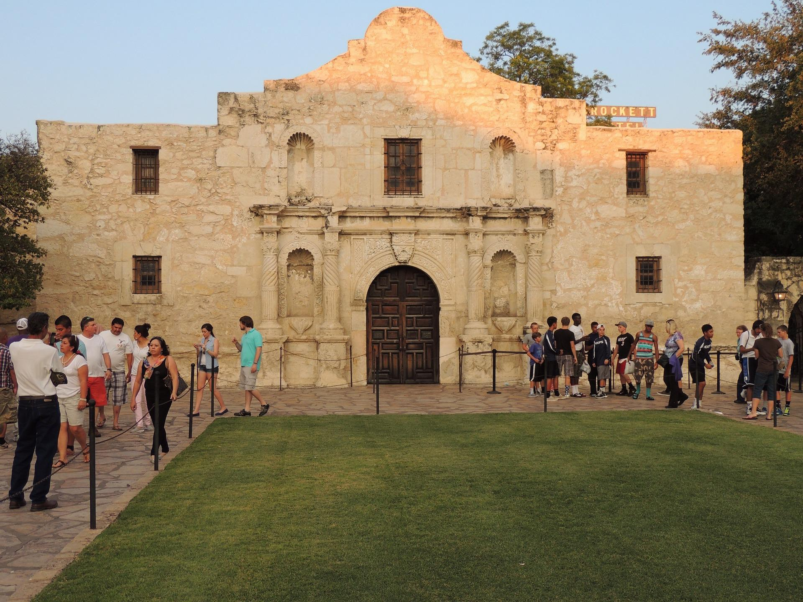
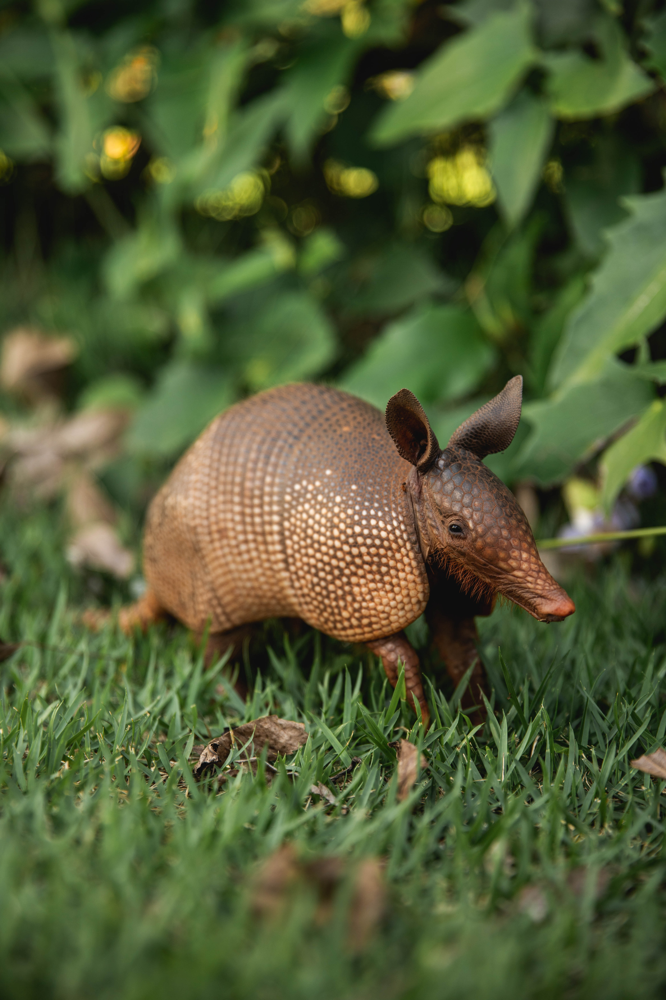

Amazing Things to See!
  
If you ever find yourself in good old Texas you have to go for the Tex-Mex cuisine and barbecue.
Plenty of culture and historic landmarks are covering almost every inch of this giant state.
Many unique wildlife like the Nine-Banded Armadillo, Texas Longhorn, and Western Diamondback Rattlesnake which is responsible for the most fatalities from a snakebite in America.
Texas is known for its college football and college sports in general. If you're a nut for sports Texas has got it.